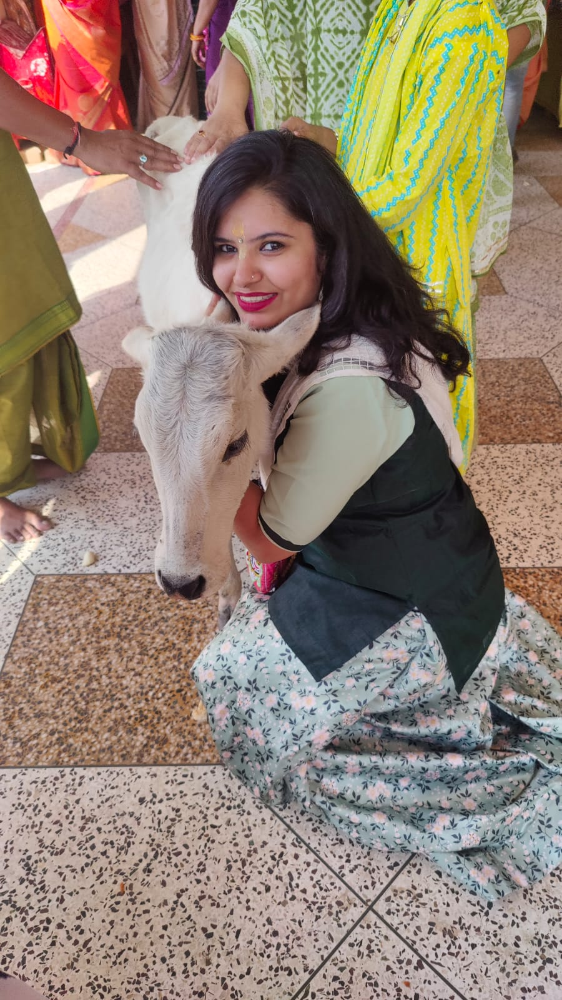
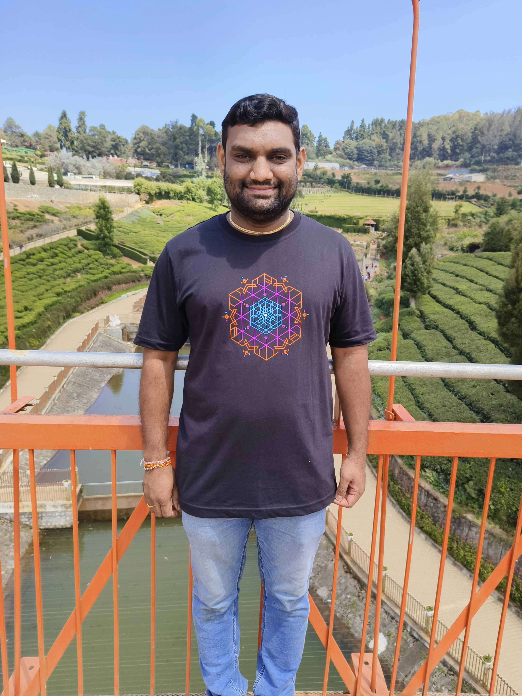
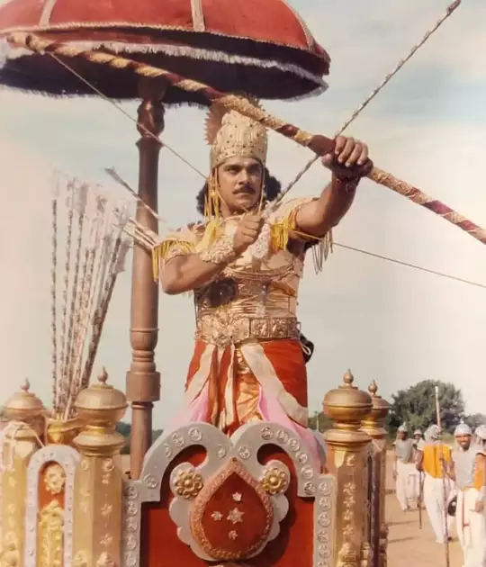
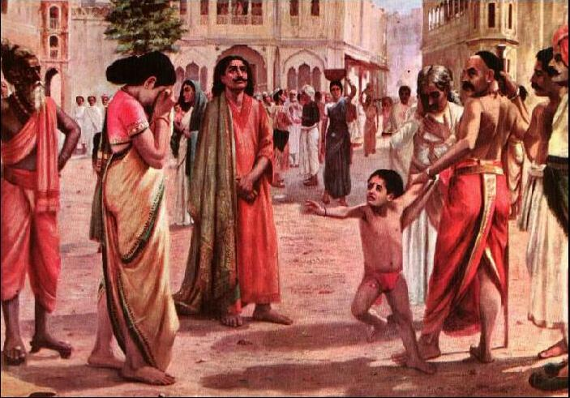
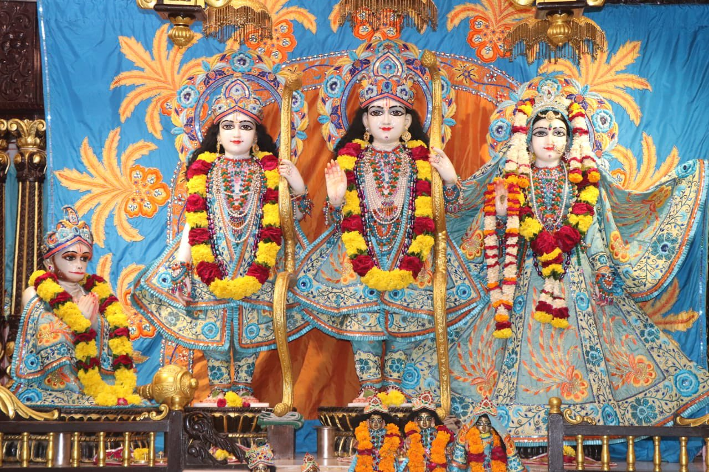

My Divine Baby's Goal Chart
| Quality | Who Has That Quality | What I Will Do to Achieve It | Related Photo |
|---|---|---|---|
| Shuddha Sattva Guni | Jad Bharat |
- Always trying to stay in krishna consciousness.
- Pursue a Life of simplicity - Practice surrender to the divine - Cultivate humility and self-inquiry - Embrace detachment and renunciation |

|
| Spiritual | Maiya |
- Read srimad bhagavatam and read shrimad bhagwat geeta
- Attending japa talk - Read Ramayan and Mahabharat - Chanting hare krishna mahamantra - Attending srimad bhagwat katha |

|
| Powerful | Pita shree |
- Make impossible to possible
- Self independent - Critical thinking - Health and fitness - Convincing skills |

|
| Danveer | Kunti putra karna |
- Cow feeding
- Help to needy people - Live with honor and uphold my word - Accept the complexity of Life - Be true to yourself |

|
| Satyavadi | Raja Harishchandra |
- Commit to truth (satya)
- Uphold justice (nyaya) - Practice self-sacrifice - Accept responsibility and consequences - Be devoted to dharma |

|
| Creative | Elon Musk |
- Puzzle games
- Vedic maths - Sudoku game, Chess - Coding, programming, software development - Focus on innovation and engineering |

|
| Leadership | Sardar Vallabhbhai Patel |
- Build strong character and integrity
- Work hard and be resilient - Master the art of decision-making - Be a problem solver and strategist - Empower others and build strong teams |

|
| Maryada Purushottam | Shree Ram, Sree Lakshman, Sita Mata |
- Respect for parents and elders
- Adherence to dharma (righteousness) - Selfless service and sacrifice - Truthfulness (satya) - Humility and simplicity |

|
| Honesty | Maiya |
- Be honest and transparent in my own communication
- Praise them when they tell the truth, even if it’s difficult or uncomfortable - Share stories or examples of the importance of honesty in real-life situations - Good genetics - Praise truthful behavior |
|
| kindness | Bhakt Prahlad |
- Encourage selflessness
- Stories of devotees - Instill a sense of fearlessness - Love for nature and creation - Create a positive environment |
|